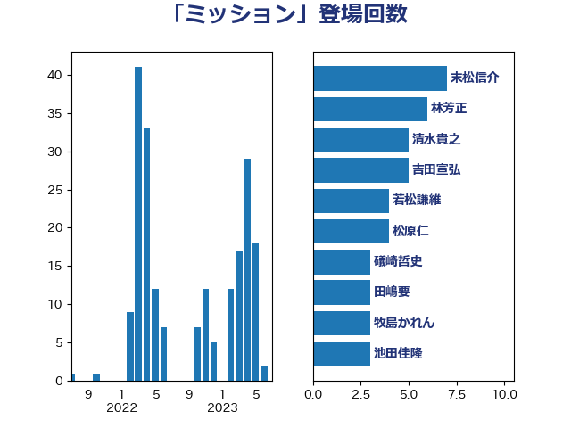

単語「ミッション」

| 末松信介 | 自由民主党 | 7 回 |
| 林芳正 | 自由民主党 | 6 回 |
| 清水貴之 | 日本維新の会 | 5 回 |
| 吉田宣弘 | 公明党 | 5 回 |
| 若松謙維 | 公明党 | 4 回 |
| 松原仁 | 立憲民主党 | 4 回 |
| 礒崎哲史 | 国民民主党 | 3 回 |
| 田嶋要 | 立憲民主党 | 3 回 |
| 牧島かれん | 自由民主党 | 3 回 |
| 池田佳隆 | 自由民主党 | 3 回 |
| 高橋光男 | 公明党 | 2 回 |
| 阿部知子 | 立憲民主党 | 2 回 |
| 鈴木貴子 | 自由民主党 | 2 回 |
| 野田聖子 | 自由民主党 | 2 回 |
| 緒方林太郎 | 無所属 | 2 回 |
| 簗和生 | 自由民主党 | 2 回 |
| 河野義博 | 公明党 | 2 回 |
| 河野太郎 | 自由民主党 | 2 回 |
| 水野素子 | 立憲民主党 | 2 回 |
| 榛葉賀津也 | 国民民主党 | 2 回 |
| 松川るい | 自由民主党 | 2 回 |
| 庄子賢一 | 公明党 | 2 回 |
| 川合孝典 | 国民民主党 | 2 回 |
| 岡本三成 | 公明党 | 2 回 |
| 山口壯 | 自由民主党 | 2 回 |
| 宮路拓馬 | 自由民主党 | 2 回 |
| 仁木博文 | 無所属 | 2 回 |
| 高階恵美子 | 自由民主党 | 1 回 |
| 青島健太 | 日本維新の会 | 1 回 |
| 鈴木馨祐 | 自由民主党 | 1 回 |
| 鈴木敦 | 国民民主党 | 1 回 |
| 鈴木俊一 | 自由民主党 | 1 回 |
| 金子道仁 | 日本維新の会 | 1 回 |
| 谷合正明 | 公明党 | 1 回 |
| 西村明宏 | 自由民主党 | 1 回 |
| 西村康稔 | 自由民主党 | 1 回 |
| 萩生田光一 | 自由民主党 | 1 回 |
| 羽田次郎 | 立憲民主党 | 1 回 |
| 篠原豪 | 立憲民主党 | 1 回 |
| 竹詰仁 | 国民民主党 | 1 回 |
| 福重隆浩 | 公明党 | 1 回 |
| 神谷政幸 | 自由民主党 | 1 回 |
| 石井苗子 | 日本維新の会 | 1 回 |
| 石井拓 | 自由民主党 | 1 回 |
| 田畑裕明 | 自由民主党 | 1 回 |
| 玄葉光一郎 | 立憲民主党 | 1 回 |
| 渡辺博道 | 自由民主党 | 1 回 |
| 浅野哲 | 国民民主党 | 1 回 |
| 武井俊輔 | 自由民主党 | 1 回 |
| 森本真治 | 立憲民主党 | 1 回 |
| 梅村みずほ | 日本維新の会 | 1 回 |
| 松本尚 | 自由民主党 | 1 回 |
| 松本剛明 | 自由民主党 | 1 回 |
| 本田顕子 | 自由民主党 | 1 回 |
| 徳永久志 | 無所属 | 1 回 |
| 平木大作 | 公明党 | 1 回 |
| 川崎ひでと | 自由民主党 | 1 回 |
| 岸田文雄 | 自由民主党 | 1 回 |
| 山本太郎 | れいわ新選組 | 1 回 |
| 山口晋 | 自由民主党 | 1 回 |
| 尾崎正直 | 自由民主党 | 1 回 |
| 小沼巧 | 立憲民主党 | 1 回 |
| 大串博志 | 立憲民主党 | 1 回 |
| 塩田博昭 | 公明党 | 1 回 |
| 古川禎久 | 自由民主党 | 1 回 |
| 原口一博 | 立憲民主党 | 1 回 |
| 加田裕之 | 自由民主党 | 1 回 |
| 伊藤孝恵 | 国民民主党 | 1 回 |
| 井上哲士 | 日本共産党 | 1 回 |
| 五十嵐清 | 自由民主党 | 1 回 |
| 丹羽秀樹 | 自由民主党 | 1 回 |
| 中谷一馬 | 立憲民主党 | 1 回 |
| 中島克仁 | 立憲民主党 | 1 回 |
| 上田清司 | 国民民主党 | 1 回 |